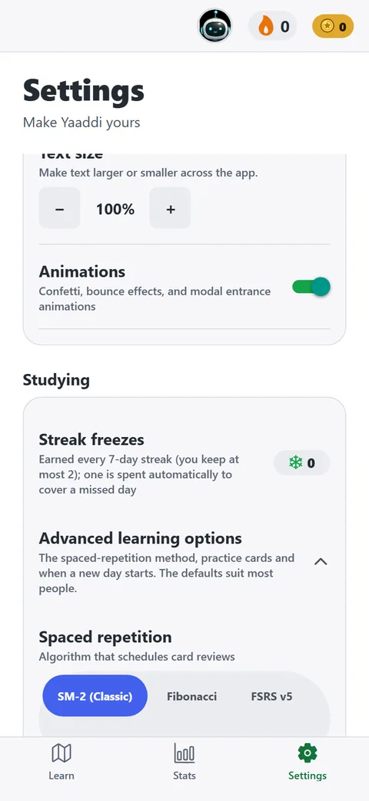

How to change the spaced-repetition algorithm in Yaaddi
Short answerGo to Settings, open Advanced learning options and pick SM-2, Fibonacci, FSRS, ACT-R or HLR under Spaced repetition. Your progress is kept; cards become due again so they can pick up the new schedule.
Steps
Open the Settings tab and tap Advanced learning options.

Under Spaced repetition, tap the algorithm you want: SM-2 (Classic), Fibonacci, FSRS v5, ACT-R or HLR.
Read the prompt Switch scheduling algorithm? and tap Switch to confirm, or Cancel to keep the current one.
The five algorithms
- SM-2 (Classic)
- The classic SuperMemo 2 method used by Anki. Each card has an ease factor, and the gap between reviews multiplies as you keep answering correctly.
- Fibonacci
- Review gaps follow the Fibonacci sequence. Simple and predictable.
- FSRS
- Models how memory fades, using each card's stability and difficulty. The newest of the five, and the one Anki now offers as an alternative to SM-2. Yaaddi's version is inspired by FSRS and adapted for right-or-wrong answers.
- ACT-R
- Based on a cognitive model of memory decay, where gaps grow with how often you have practiced a card.
- HLR
- Half-Life Regression, the approach Settles and Meeder published and Duolingo uses. Each card has an estimated memory half-life that grows by about 23% after a correct answer and shrinks by about 29% after a wrong one.
Which one should I choose?
The default works well for most people, and there is no setting that is right for everyone. Yaaddi grades answers as simply correct or incorrect, with no "hard" or "easy" buttons, so all five are adapted to that. If you have no strong reason to switch, keep the default. If you want to experiment, change one thing and study for a few weeks before you judge it.
Good to know
- Switching never deletes anything. Every card keeps the progress you have made, but becomes due for review right away so it can pick up the new algorithm's schedule. Expect a larger first review session after a switch.
- Your Coins, streaks and review history are not affected.
- New day starts at, in the same section, sets when a card scheduled for "tomorrow" becomes due. The default is 2:00 a.m.
- If a switch fails, the app tells you nothing was changed. Check that the phone has free storage and try again.
Common questions
What is spaced repetition?
A study method that shows you a fact again just before you would forget it. Correct answers push the next review further away; wrong answers bring it closer.
Does Yaaddi have "Again, Hard, Good, Easy" buttons like Anki?
No. Yaaddi questions have one right answer, so the app grades them for you as correct or incorrect.